Part Context
Part: Part 2 - Core System Building Blocks
Position: Chapter 5 of 60
Why this part exists: This section moves from framing to mechanics by explaining the infrastructure components that repeatedly appear in real-world systems.
This chapter builds toward: data-modeling decisions, consistency trade-offs, and storage choices that reflect access patterns rather than fashion
Overview
Databases are not just persistence layers. They shape the correctness, performance, scalability, and cost of the entire system. A weak data model can quietly punish a product for years, while a strong one creates clarity around ownership, consistency, and growth.
This chapter looks beyond the SQL vs NoSQL slogan. The real question is how data is read, written, related, distributed, and recovered. Architects must think about access patterns, indexing, transactions, replication, and evolution together.
Why This Matters in Real Systems
- Most systems are limited by data access patterns long before they are limited by raw compute.
- Database choices affect consistency, scaling strategy, and failure recovery more than many teams realize.
- Strong data modeling reduces accidental complexity in application logic.
- Interviewers often test data reasoning because it reveals whether a candidate can build durable systems rather than only APIs.
Core Concepts
Relational vs non-relational models
Relational systems excel when relationships, constraints, and transactional integrity matter. Non-relational systems often prioritize flexible schema, simpler partitioning, or workload-specific performance.
Indexing
Indexes accelerate reads but add write cost, storage overhead, and sometimes operational complexity.
Transactions and ACID
Transactions help preserve correctness across multi-step writes, but they also influence throughput and distributed design choices.
Replication and partitioning
As systems scale, copies and partitions of data improve capacity and availability but introduce consistency and routing trade-offs.
Key Terminology
| Term | Definition |
|---|---|
| Schema | The structure and constraints of stored data. |
| Index | An auxiliary lookup structure that speeds up selected queries. |
| ACID | Atomicity, consistency, isolation, and durability for transactional systems. |
| Replication | Maintaining copies of data across nodes or regions. |
| Sharding | Partitioning data across multiple nodes or databases. |
| Denormalization | Restructuring or duplicating data to optimize specific reads. |
| Primary Key | A unique identifier for each record. |
| Hot Partition | A partition receiving disproportionate traffic and becoming a bottleneck. |
Detailed Explanation
Model around access patterns
The best database choice usually follows how the system asks questions of the data. If a workflow depends on joins, referential integrity, and transactional correctness, relational modeling is often natural. If access is mostly by key at enormous scale, a simpler distributed model may be more appropriate.
Indexes are not free performance
Indexes make selected queries fast because they create optimized lookup paths. But every new index consumes storage and slows writes because the database must update additional structures. High-write systems must be selective and deliberate about indexing.
Transactions are business tools, not academic features
The value of a transaction appears when a business action must not partially succeed. Orders, ledger updates, and inventory reservation are easier to reason about when the storage layer can preserve grouped correctness. Long or overly broad transactions, however, can hurt concurrency and throughput.
Replication helps reads and availability but complicates truth
A replica can serve reads and improve resilience, but now you must ask which node is authoritative, how lag affects user experience, and what happens during failover or network partitions.
Data growth changes architecture shape
A design that works with one database node may eventually need read replicas, partitioned tables, search indexes, analytics stores, or object storage for large blobs. Good architects recognize that one database rarely remains the perfect home for every workload forever.
Diagram / Flow Representation
Data Access Path

Modeling Trade-off Lens

Real-World Examples
- Instagram-like products often keep user and post metadata in transactional stores while serving large media from object storage.
- Amazon-like order systems rely heavily on transactional integrity for core purchase state even if analytics and recommendation systems use very different storage engines.
- Google-scale search requires specialized indexing structures that are very different from ordinary relational tables.
- Netflix metadata, recommendation, playback state, and analytics are unlikely to live optimally inside the same storage model.
Case Study
Instagram-style database design
A social media platform highlights why one database rarely solves every problem equally well. User profiles, follows, posts, likes, comments, media metadata, and feeds all have different access patterns.
Requirements
- Store users, posts, follow relationships, comments, likes, and media metadata reliably.
- Support fast profile reads, comment retrieval, and post detail lookups.
- Handle high read traffic for feeds and hot content.
- Keep media objects separate from transactional metadata.
- Support future features such as search, recommendations, analytics, and notifications.
Design Evolution
- A first version may use a relational model for users, posts, relationships, and comments because core relationships are explicit.
- As read pressure grows, selective denormalization and caching may be introduced for profile and feed reads.
- As media grows, binary objects are moved to object storage and served via CDN while only references remain in the primary database.
- As feeds, search, and analytics evolve, specialized read stores or pipelines are added rather than forcing one database to serve every purpose.
Scaling Challenges
- Follower graphs can create skew and expensive joins if modeled without read patterns in mind.
- Secondary indexes improve reads but can make heavy write workloads more expensive.
- Replica lag can produce stale views that may or may not be acceptable depending on the feature.
- Large binary media stored in the wrong place can overload the primary transactional system.
Final Architecture
- A transactional primary store for users, posts, follows, and comments.
- Carefully designed indexes for hot read paths such as profile pages and comment lists.
- Object storage for images and videos, with CDN delivery for performance.
- Optional denormalized read models or caches for feed and engagement-heavy views.
- Backup, replica, and recovery strategy designed around the importance of user content durability.
Architect's Mindset
- Choose data models based on access patterns and correctness needs, not ideology.
- Be deliberate about which queries deserve indexes and which writes deserve simplicity.
- Keep the source of truth clear, especially when replicas, caches, and derived views exist.
- Expect polyglot persistence in mature systems, but introduce it only when the workload truly justifies it.
- Model data evolution and migration cost as part of the architecture, not as future cleanup work.
Isolation Levels — A Practical Primer
Transaction isolation determines what one transaction can see of another's uncommitted or recently committed changes. Choosing the wrong level causes bugs that are extremely hard to reproduce.
The Four Standard Levels
| Level | What You Can See | Anomalies Allowed | Use When |
|---|---|---|---|
| Read Uncommitted | Other transactions' uncommitted writes | Dirty reads, non-repeatable reads, phantoms | Almost never — approximate analytics only |
| Read Committed | Only committed data (re-read may change) | Non-repeatable reads, phantoms | Default for most OLTP (PostgreSQL default) |
| Repeatable Read | Snapshot at transaction start | Phantoms (new rows can appear) | Financial reporting, inventory checks |
| Serializable | As if transactions ran one at a time | None | Money transfers, double-booking prevention |
Anomaly Quick Reference
| Anomaly | What Happens | Example | Prevented By |
|---|---|---|---|
| Dirty read | Read uncommitted data that may roll back | See $0 balance during uncommitted transfer | Read Committed+ |
| Non-repeatable read | Same query returns different values in one txn | Inventory: 10 → re-check → 8 | Repeatable Read+ |
| Phantom | New rows appear matching previous WHERE | Count orders: 50 → count again: 51 | Serializable |
| Write skew | Two txns read same data, both write, invalid state | Two doctors both go off-call → zero on-call | Serializable |
Practical guidance: Default to Read Committed. Use Repeatable Read for read-compute-write workflows. Use Serializable only for critical correctness paths (handle serialization failures with retries).
Database Default Isolation Levels
| Database | Default | Notes |
|---|---|---|
| PostgreSQL | Read Committed | Supports Serializable via SSI |
| MySQL (InnoDB) | Repeatable Read | MVCC; phantom protection via gap locking |
| SQL Server | Read Committed | Supports snapshot isolation |
| CockroachDB | Serializable | Distributed DB, strongest by default |
| Spanner | External consistency | Uses TrueTime |
Cross-reference: For how isolation interacts with distributed systems, see F2: CAP Theorem & Consistency and F4: Consensus & Coordination.
Change Data Capture (CDC) and the Outbox Pattern
When a database write must trigger downstream actions (update cache, publish event, sync search index), the naive dual-write approach is fragile. If the API call fails after the DB write, systems are inconsistent.
Transactional Outbox Pattern
Write the event to an "outbox" table inside the same database transaction as the business data. A separate relay process reads the outbox and publishes events.
Single Database Transaction:
1. INSERT INTO orders (...) VALUES (...)
2. INSERT INTO outbox (event_type, payload) VALUES (...)
COMMIT
↓
Outbox Relay (Debezium / custom poller):
Reads outbox → Publishes to Kafka → Marks as published
↓
Downstream Consumers:
Search index, cache invalidation, notifications, analyticsWhy it works: Both business write and event are in the same transaction — either both succeed or both roll back.
CDC Approach Comparison
| Approach | Pros | Cons |
|---|---|---|
| Outbox table | Simple, works with any DB, explicit event schema | Adds table + relay process |
| Log-based CDC (Debezium) | No app changes, captures all changes including direct DB edits | Requires WAL access, tighter DB coupling |
When to Use CDC/Outbox
| Scenario | Recommended Approach |
|---|---|
| Keep search index in sync with primary DB | CDC (Debezium → Kafka → Elasticsearch) |
| Publish domain events after writes | Outbox pattern (explicit event schema) |
| Replicate data to analytics warehouse | CDC (Debezium → Kafka → data lake) |
| Invalidate cache on DB change | CDC or outbox |
| Cross-service data sync in microservices | Outbox pattern (avoids distributed transactions) |
Multi-Tenant Data Isolation and Data Residency
SaaS systems serving multiple customers must decide how to isolate tenant data. The choice affects security, compliance, performance, and operational complexity.
Tenant Isolation Models
| Model | Isolation Level | Cost | Best For |
|---|---|---|---|
Shared DB, shared schema (tenant_id column) | Low (app-enforced) | Lowest | Early-stage SaaS, low compliance |
| Shared DB, separate schemas | Medium | Moderate | Mid-tier SaaS |
| Separate databases | High | Highest | Enterprise, regulated industries |
| Hybrid | Variable | Moderate-High | Mixed customer tiers |
Tenant isolation checklist:
- Every query includes
tenant_idfilter — enforce via ORM middleware - Row-Level Security (RLS) enabled for defense-in-depth
- Cross-tenant access tested in CI (negative tests)
- Tenant-specific encryption keys for sensitive data
- Backup/restore scoped to individual tenants
- Noisy-neighbor protection via resource limits or separate connection pools
Data Residency Requirements
| Requirement | Implementation |
|---|---|
| EU data stays in EU | Deploy EU tenant data in eu-west-1; routing layer directs EU tenants to EU database |
| Tenant chooses region | Region field in tenant config; app routes to tenant's chosen region |
| No cross-border replication | Disable cross-region replicas for tenants with residency constraints |
| Audit trail for data location | Log all data access with region tag |
Further Reading and Cross-References
Cross-Links to Deep Chapters
| Topic | Chapter | What You'll Learn |
|---|---|---|
| CAP theorem and consistency | F2: CAP Theorem & Consistency | Partition tolerance trade-offs |
| Consensus protocols | F4: Consensus & Coordination | How distributed DBs achieve agreement |
| Sharding strategies | F7: Data Partitioning | Hash vs range, rebalancing |
| Caching in front of DBs | Chapter 6: Caching Systems | Cache-aside, write-through, invalidation |
| Database observability | F10: Observability & Operations | Connection pool monitoring, replication lag |
| DB migrations in deployment | F11: Deployment & DevOps | Expand-contract pattern |
Cloud Database Guidance
| Provider | Recommended Reading |
|---|---|
| AWS | Aurora best practices, DynamoDB design patterns, RDS performance insights |
| GCP | Cloud Spanner schema design, Cloud SQL for PostgreSQL, Firestore data modeling |
| Azure | Cosmos DB consistency levels, Azure SQL elastic pools |
Key Concepts from DDIA
| DDIA Concept | Relevance | Chapter Connection |
|---|---|---|
| LSM trees vs B-trees | Why different DBs optimize for reads vs writes | Storage engine internals |
| Linearizability vs serializability | Two consistency guarantees often confused | F2: CAP Theorem |
| Stream processing and CDC | How databases feed real-time pipelines | CDC/Outbox section above |
| Hash vs range partitioning | Data distribution trade-offs | F7: Data Partitioning |
Common Mistakes
- Choosing SQL or NoSQL as an identity statement instead of a workload decision.
- Over-indexing write-heavy tables and then wondering why throughput suffers.
- Storing large blobs in the same system that serves latency-sensitive relational queries.
- Assuming replicas are instantly consistent for all reads.
- Letting application logic absorb complexity that should have been handled by a better data model.
Interview Angle
- Interviewers ask database questions to see whether you can connect storage design to business behavior and scale.
- Strong candidates explain how query shape, consistency needs, and growth patterns influence database choice.
- A good answer usually mentions schema, indexing, read-write ratio, replicas, and future evolution.
- Saying “use NoSQL for scale” without explaining the workload is usually a weak answer.
Quick Recap
- Database design is central to system design because storage choices shape correctness and performance.
- SQL and NoSQL solve different problems and are often combined in mature systems.
- Indexes are powerful but costly on the write path.
- Replication and partitioning help scale but introduce consistency and operational trade-offs.
- The best data model matches the way the application actually uses the data.
Practice Questions
- How do you decide between relational and non-relational storage for a new system?
- Why can an index improve latency while hurting throughput?
- When is denormalization worth the write complexity it introduces?
- What kinds of data should be moved out of the primary database into object storage?
- How does replica lag affect application behavior?
- What signs suggest a system is ready for polyglot persistence?
- How would you model users, posts, and comments for a social app?
- Why are transactions especially important in some domains and optional in others?
- What is a hot partition, and how might you detect one?
- How would you explain database trade-offs to a product manager who only wants “it to scale”?
Further Exploration
- Connect this chapter with consistency and CAP later in the book.
- Study partitioning strategies, query planning, and recovery models in more depth.
- Practice modeling the same product in both relational and document-first styles to understand trade-offs.
Navigation
- Previous: Networking Fundamentals
- Next: Caching Systems